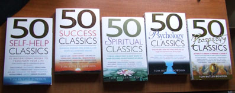

WilyWalnut.com
Meet the Genius in YOUR Brain!
The Synopsis GeniusA review of Tom Butler-Bowdon's '50 Classics' Personal Development Book SeriesTom Butler-Bowdon has authored 5 personal development books (so far) under the 50 Classics bannerhead:
In each book, he selects 50 classic books from the genre he is covering, and gives a synopsis of the main ideas covered in each classic book. While his selection is personal, he does include the most popular books in that particular area of personal development and, for my opinion, he chooses well. Coming from an early political career in which he was employed to write briefing notes, Butler-Bowdon has developed an uncanny ability to extract the most important information from the main body of data. In this day and age, anything that we can do to simplify the gathering of knowledge is a must. Compressing ideas down into smaller, more-easily digestible chunks is such an important service when faced with mountains of information to consume. Tom Butler-Bowdon manages to "squeeze out the juice" from his selections, leaving the pith, pulp and filler for readers with more time on their hands. I first got hold of a copy of 50 Self-Help Classics and was immediately impressed by Butler-Bowdon's ability to deeply understand, extract and communicate the most important aspects of each book he covered. In it he covers self-help authors reaching across the ages from Marcus Aurelius' Meditations through Benjamin Franklin's Autobiography, Victor Frankl's Man's Search For Meaning to more modern self-help classics like Shakti Gawain's Creative Visualization, Anthony Robbin's Awaken The Giant Within and Louise Hayes' You Can Heal Your Life. Even though I had read nearly all the books comprising these 50 Self-Help Classics, I found it really vauable to review them and recall the main ideas via Tom's eloquent synopsis of each title. I particularly like the way each classic book occupied it's own chapter and the way it was laid out with the first page featuring the book title, some quotes to set the tone and an "In a nutshell" box in which Butler-Bowdon synthesizes the whole book down into one idea captured in a sentence. Below this is an "In a similar vein" reference to other similar themed classic titles and their page numbers. He then proceeds to the main synopsis of the classic book that chapter is featuring. At the end, he makes final comments, and then on it's own page gives a brief biography of the author of the classic. I was so impressed by this first collection that I subsequently have collected all Tom Butler-Bowdon's 50 Classics books. I think Tom Butler-Bowdon has written the equivalent of Cliffs Notes for anyone wanting to get a degree course in personal development and I recommend them highly.  Additional Reasons to get Tom Butler Bowdon's books:
GENIUS ARTICLES HOME IQ TESTS - CREATIVITY - GENIUS - BRAIN STORMING - SELF-HELP - BRAINTEASERS - BLOG | ||
|

"Unleash Your Inner Genius For Creativity & Innovation!" Copyright 2001-2015 WilyWalnut.com SITE MAP